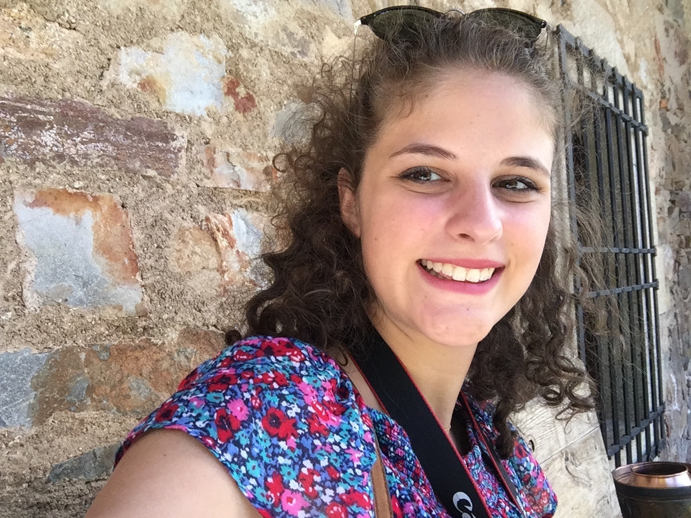
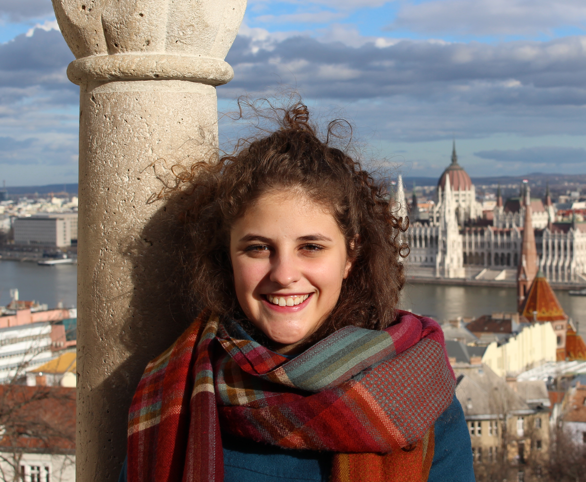
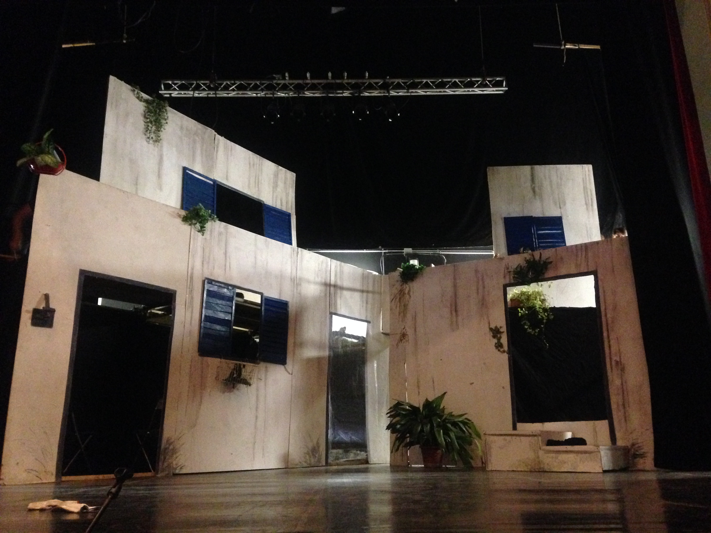

Mi presento!

Sono Silvia Tanasini, una ragazza di 20 anni che studia Design degli Interni al Politecnico di Milano. “Curiosità” è una delle mie parole preferite, sopratutto perchè porta a scoprire cose sempre nuove e a fare nuove esperienze: in poche parole nuovi interessi. Viaggi, teatro, danza, disegni e libri sono il mio pane quotidiano e attenzione che non sono scritti in ordine di importanza perchè non sono una che sa decidersi facilmente. Oltre che nutrire me, spero che questi temi sazino anche questo blog, e spero che lo facciano da un punto di vista un po’ diverso, un po’ più romantico e colorato come la mia sciarpa multicolor.

About Me
Ho frequentato un liceo scientifico, anzi non un liceo scientifico qualunque, ma il Paolo Frisi di Monza ( altrimenti conosciuto da chi è della zona come “Paolone”). Lo so che i toni non sono proprio quelli di una ragazza modesta, ma sono troppo fiera del mio liceo, non per i miei voti, tranquillamente nella media, ma per la mente aperta che sviluppa nei suoi studenti e per le mille opportunità che offre. Prima fra tutti c’è il laboratorio di teatro, in cui il gruppo di aspiranti attori è seguito da uno di aspiranti scenografi: è proprio qui che ho scoperto il magico mondo del “dietro le quinte”! Da quel momento ogni volta che visito una città dove c’è un teatro io trovo sempre il modo di entrarci e vederlo con gli occhi di chi tira le funi dietro le quinte per alzare o abbassare gli sfondi (nei più moderni basta azionare un motorino).
Eh si, perchè un’altra delle cose che amo fare è proprio viaggiare, sia fisicamente sia mentalmente.
Fisicamente, si intende camminando per i vicoli delle città chiedendosi come mai Gaudì abbia costruito così Casa Batlló. In questo caso preferisco di gran lunga capire come è vissuta una città, andare in giro senza cartina (ho un buon senso dell’orientamento di solito) girando verso una casetta colorata che incuriosisce, infilando il naso nei cortili serrati attraverso il buco della serratura e scattando foto (anche se, purtroppo, non sono così brava).
Mentalmente invece si riferisce sia alla fantasia che permette di sognare posti bellissimi, sia ai libri che permettono di viaggiare in tutti i sensi e le dimensioni, sia alle due cose insieme: secondo loro la cattedrale di Kingsbridge esiste ed è una delle più belle che ci siano, quasi come quella di Burgos (gli amanti di Ken Follett sanno di cosa parlo).
Ed è proprio per questo che ho scelto Design degli Interni come corso di laurea: penso che mi dia la possibilità di sviluppare e trovare un punto di unione tra la maggior parte dei miei interessi, perchè dover sceglierne uno sarebbe troppo difficile e, anche un po’ triste.

Detto questo, direi che un’idea di me ormai ce l’avete, e se per caso fosse ancora troppo confusa, spero di chiarivi le idee con gli altri articoli di questo blog. In ogni sezione potrete trovare un pezzetto di me sotto forma di:
- disegni e progetti, per la cui realizzazione fondo le mie meningi fino a orari improponibili
- viaggi, che cercherò di condividere attraverso video (quando mi regaleranno un GoPro) e foto
- libri, sperando che il senso del dovere nei confronti di questa pagina mi faccia leggere più di 3 righe prima di crollare in un sonno più profondo di quello della Bella Addormentata.